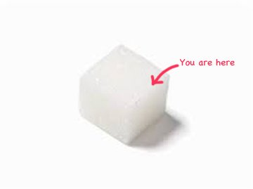

"No thing comes into existence. Knowledge of the world outside of Consciousness, made out of stuff called ‘matter’, is a kind of ignorance." --Rupert Spira
Science: “If you took out all of the space in our atoms, the entire human race (all 7 billion of us) would fit into the volume of a sugar cube. 99.99% of the human body is completely empty.” **
Humans: “Yeah yeah, ok, but what about Meee?”
Let’s face it, humans are kind of obsessed with the Meee, aren’t we?
I mean, look at us. Single-mindedly focused on, and circling relentlessly, monitoring, watching, figuring out, analyzing, advising, critiquing, and correcting our self...
Even though it's empty.
Making it better, making it right, making it happy, making it enlightened. Making it think right, be good, be kind, be special. There are shoulds and shouldn’ts and rights and wrongs and likes and dislikes and wants.
Whew. This emptiness sure has a lot of opinions and obligations.
Maybe all that obsessing is hopefully intended to fill up that space.
Because as far as our attention goes, how Meee is doing and what it experiences are the very center of the universe.
We’ve focused day and night on no-thing as if it’s some-thing.
Who knew empty space could be so Self centered?
While meanwhile, it remains nothing.
Which perhaps explains how we may feel "empty" sometimes. Because as-if, aka make-believe, is not very filling, not very satisfying.
We're left wanting more. And we want a lot of more.
More solidity, more realness, more groundedness, more authenticity, more intensity, more pleasure, more food, love, sex, wine, money.
In fact humans are so eager to fill up all that Empty that we even want more of that. As in, more emptiness, more enlightenment, more spaciousness, more awareness, more peace, more truth.
Anything will do, as long as it's more.
Meee wants it.
Which might make us wonder, being 99.99% empty already, what exactly is this Mee that wants so darn much?
I mean, it's space. We'll never get more of what we are already.
Emptiness can't get more empty.
It can't fill up, either, no matter how hard we try.
See, because it's nothing. It's empty.
Still, with all this obsessing, we might begin to see why some humans go and get busy searching for True Nature.
“Non-object-empty-space seeks solidity, definition, and realness. Intense non-stop attention on itself required. Enlightenment a bonus. Apply within.”
Perhaps this is why spiritual folks have been trying to define and locate this True-Nature thing for such a long time.
And also why it has not been so easily found.
It’s not easy to find nothing.
Especially when nothing is what’s doing the looking.
Because despite all the attempts at centering the self, we’re not objects in the space.
We are the space.
No center point. Not locatable. Outside same as inside. All one, etc etc.
We’re experience. We’re nothing. The self is not there.
Which means there's no True Nature to be found, there's no need to find one, and there's nothing looking for it.
And no amount of obsession or want or meditation or navel-gazing will change that.
Not that there's anything wrong with any of this. Obsessing about the Meee and what it is or isn't, or looking for solidity, answers, enlightenment, or spaciousness- these are all as good things to do with these lives as anything else.
There's no right way for space to be nothing.
So if humans work hard to convince ourselves that we are real objects, rather than unlocatable nothingness itself...
If we really want to believe, "We're here, we matter, we’re significant, we’re something,..."
If we really really want the Meee to mean something, to be real, to be better, to be enlightened...
OK. Why not?
We're still nothing.
Obsessed or not.
Getting-it or not.
Seeking or not.
Still
99.99%
( )
"Nothing: something that does not exist. No thing.
Space: a continuous area or expanse which is free, available, or unoccupied."
-- Merriam-Webster
** https://www.scienceabc.com/pure-sciences/can-the-entire-human-race-fit-inside-a-sugar-cube.html
Space
